EVENTOS
La existencia del universo comenzó hace más de 14 mil millones de años, y aun así es considerado muy joven. Desde el comienzo de los tiempos se fue desarrollando, creando estrellas, agujeros negros, planetas, sistema de planetas, galaxias, etc. Todos estos eventos importantes desencadenaría en sucesos aún más increíbles ¡para nosotros! Pero que sucederán en millones y millones de años en el futuro, algo que la raza humana no estará para contarlo.
-
ANILLOS DE SATURNO
100 millones de años
Hasta este momento, los anillos del planeta Saturno desapareceran debido a la caida del hielo y el polvo, que lo compone, hacia su propio planeta por accion gravitatoria.
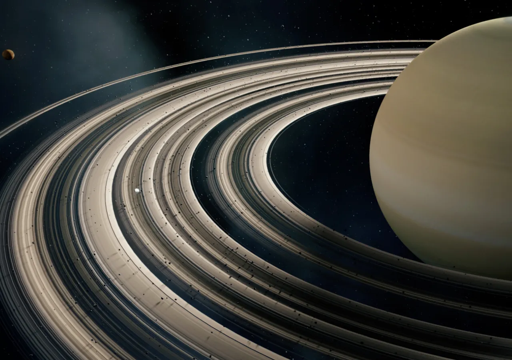 -
ORBITA COMPLETADA
240 millones de años
Desde el momento presente, todo el Sistema Solar en conjunto viaja a aproximadamente 828 mil kilómetros por hora, y en 240 millones de años habrá completado una órbita completa alrededor de nuestro centro galáctico.
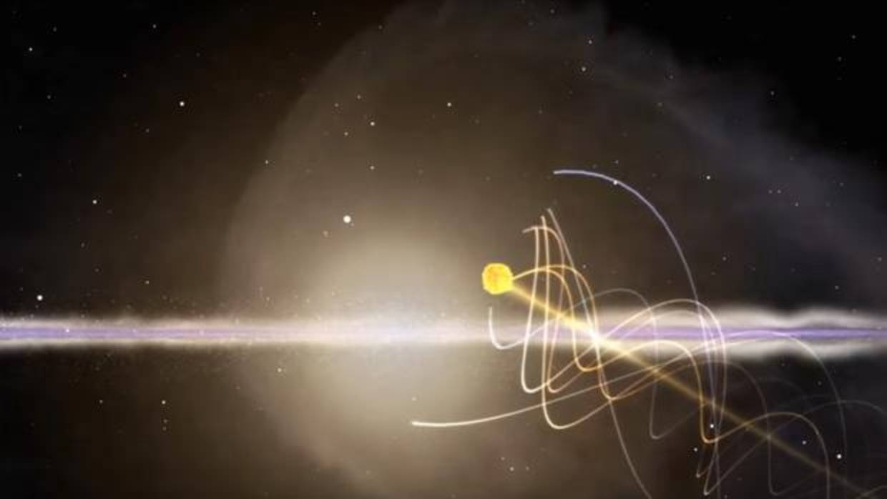 -
ZONA HABITABLE
1500–1600 millones de años
El incremento de la luminosidad solar hará que la zona habitable del Sistema solar se mueva al exterior, haciendo de Marte un planeta habitable con una temperatura media parecida a la Tierra en una edad de hielo.
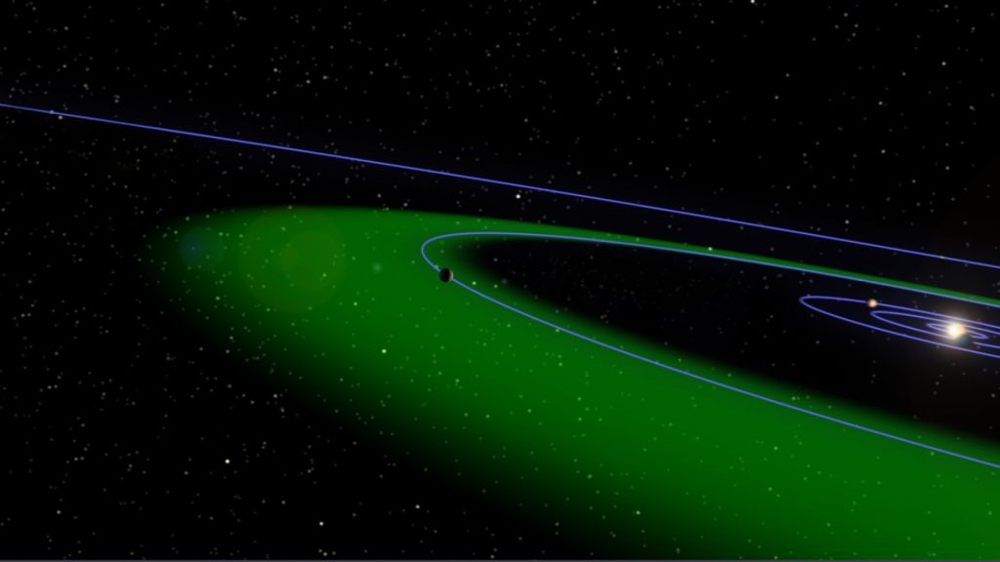 -
COLISION INTERNA
3300 millones de años
Existe la pequeña probabilidad de que la órbita de Mercurio se extienda provocando una colisión con Venus y llevar al Sistema Solar interno al caos y a una colisión potencial con el Sol, siendo eliminado del Sistema Solar o una colisión planetaria potencial con la Tierra.
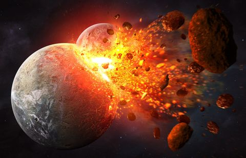 -
CHOQUE GALACTICO
3.870 millones de años
La colisión entre la Vía Láctea y Andrómeda, es un evento que venia ocurriendo hace mucho tiempo. Con una velocidad de 300 km/s, las dos galaxias acabarán por fusionarse y convertirse en una galaxia mucho más grande denominada Lactómeda.
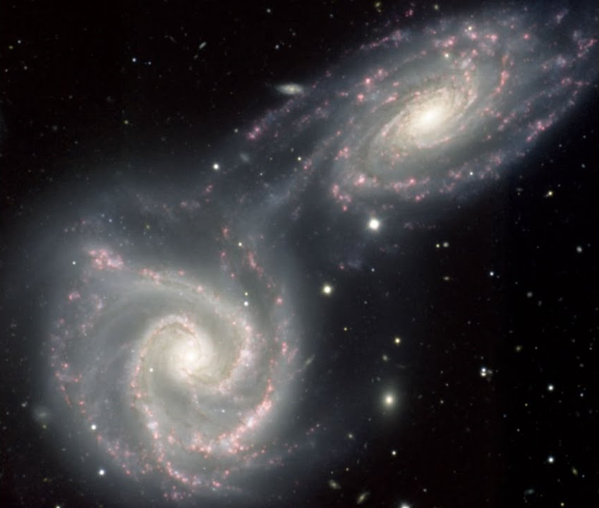 -
EXPLOSION DEL SOL
5.000 millones de años
Al igual que muchas otras fuentes de energía, el Sol no es eterno, con 4,5 mil millones de años de vida, ya ha utilizado casi la mitad del hidrógeno de su núcleo, por lo que se agotará en unos cinco mil millones de años.
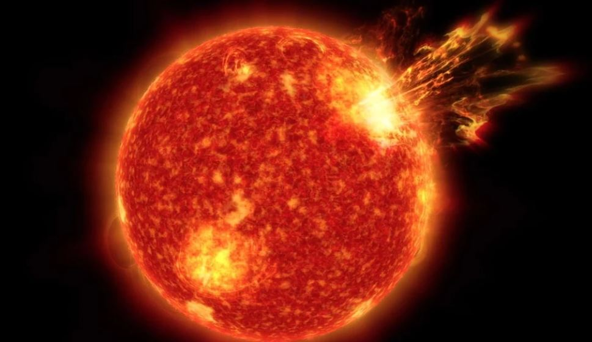 -
FIN DEL SISTEMA SOLAR
38.000 millones de años
Las ligeras perturbaciones gravitatorias producidas por el paso de estrellas cercanas podría provocar la desestabilización de los últimos planetas que quedaran orbitando el Sol, provocando el fin del Sistema Solar.
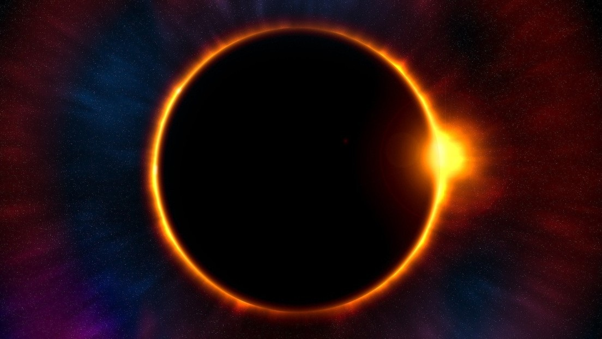 -
FUSION DEL GRUPO LOCAL
450.000 millones de años
Punto medio en el que se espera que las 47 galaxias que compone al Grupo Local, grupo al que pertenecemos, se terminen fusionando en una única galaxia simple.
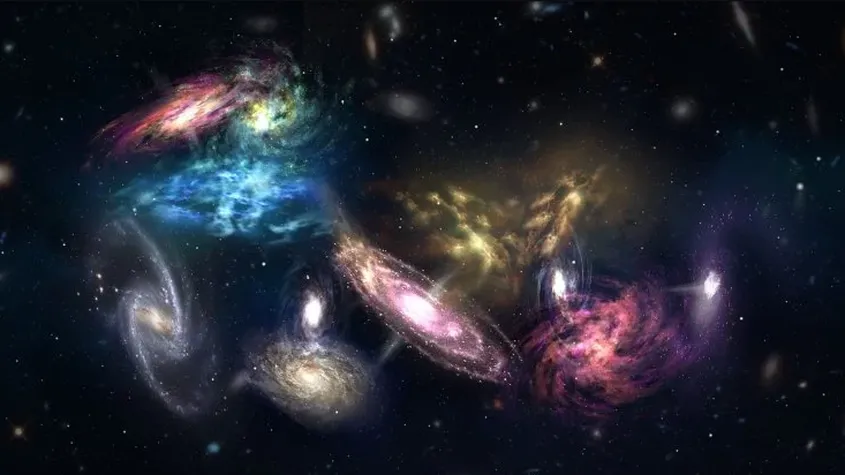 -
OSCURIDAD
110–120 billones de años
En este punto todas las estrellas del universo habrán agotado todo su combustible, incluso aquellas con una vida muy larga. Después de este punto solo quedarán enanas blancas, estrellas de neutrones, agujeros negros y estrellas marrones.
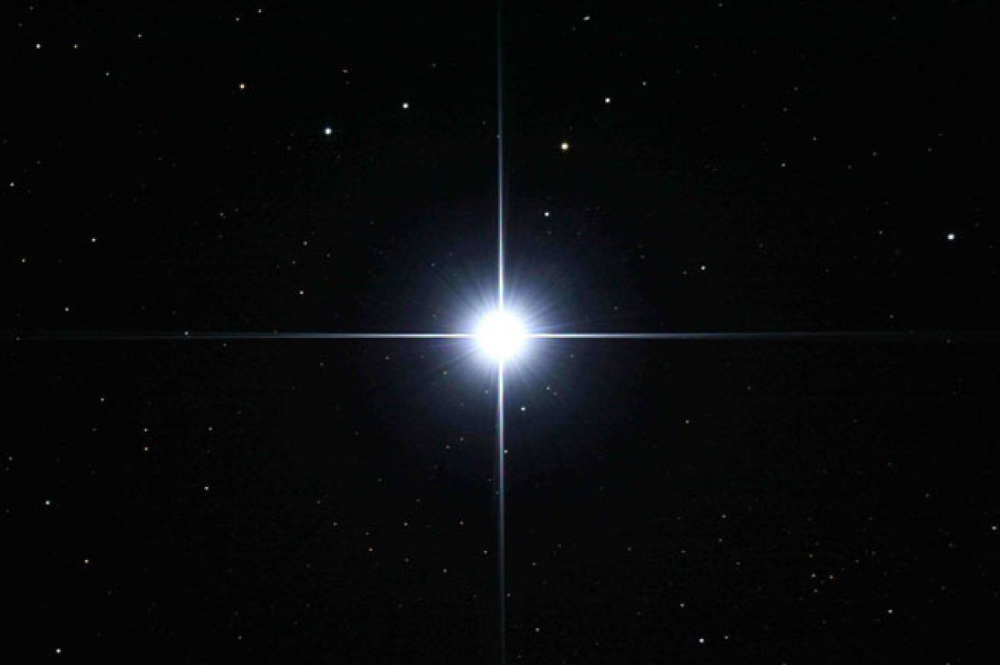 -
CAIDA GALACTICA
1 trillon de años
Debido a la falta de energia estelar, se estima que dentro de un trillon de años las galaxias se evaporaran.
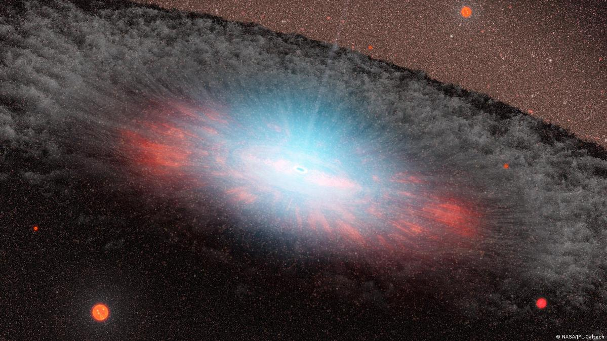 -
VACIO
1 gúgol de años
Muchos astrónomos esperan que todos los agujeros negros en el universo se hayan evaporado alrededor de este punto, dejando al universo unicamente con vacio.
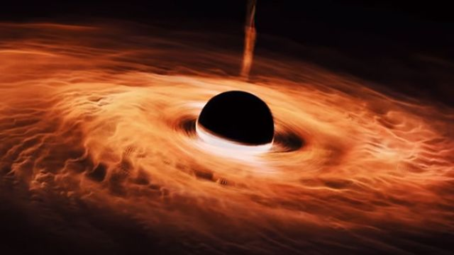 -
MUERTE TERMICA
1 googol de años
Estimación más alta para que el universo alcance su estado maximo, en donde se agotaria la poca energía que le quedaba y sufriria de una muerte térmica, llegando a su fin.
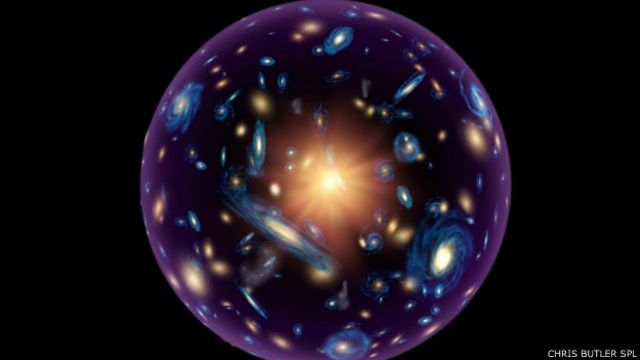